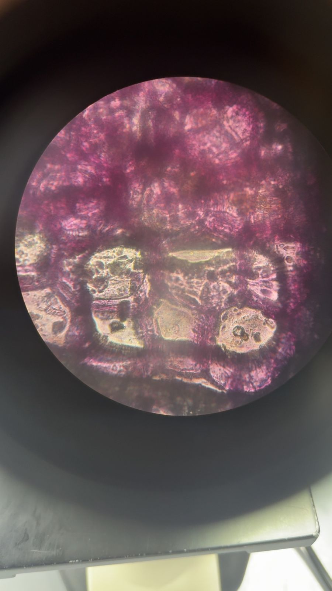
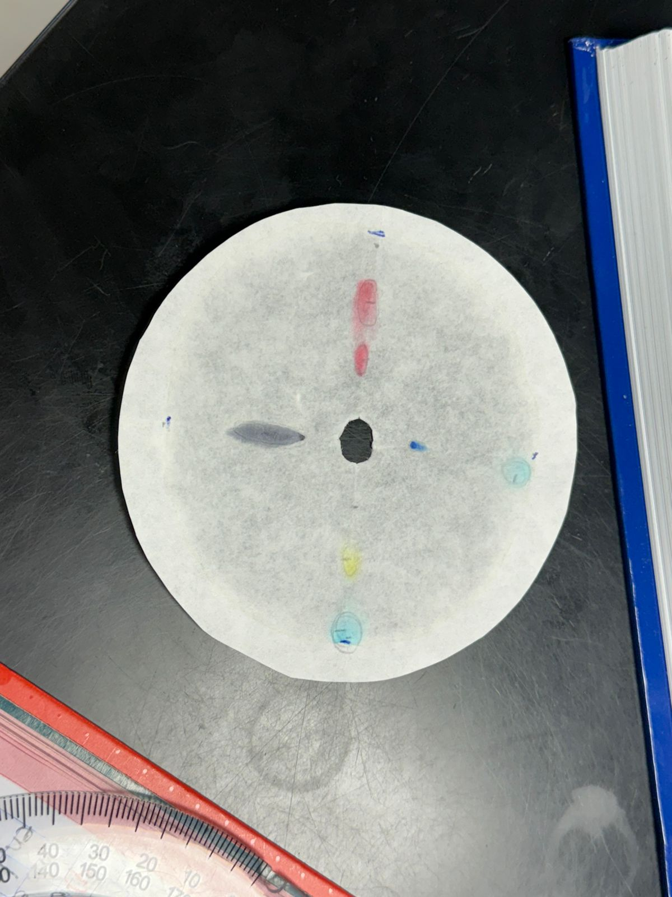
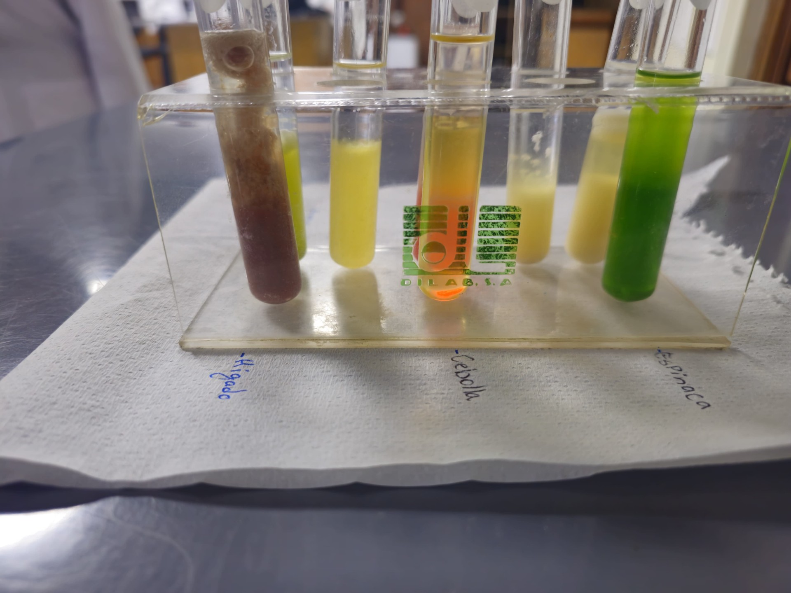
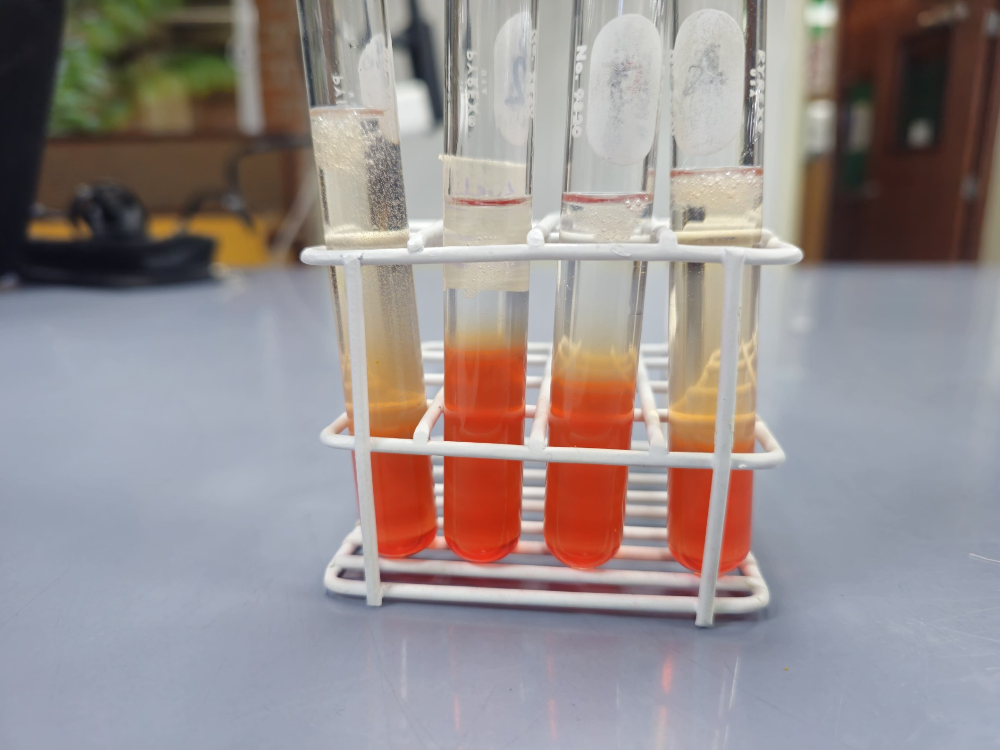
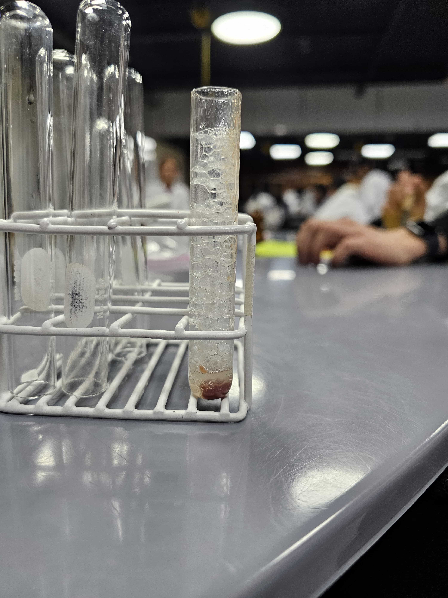
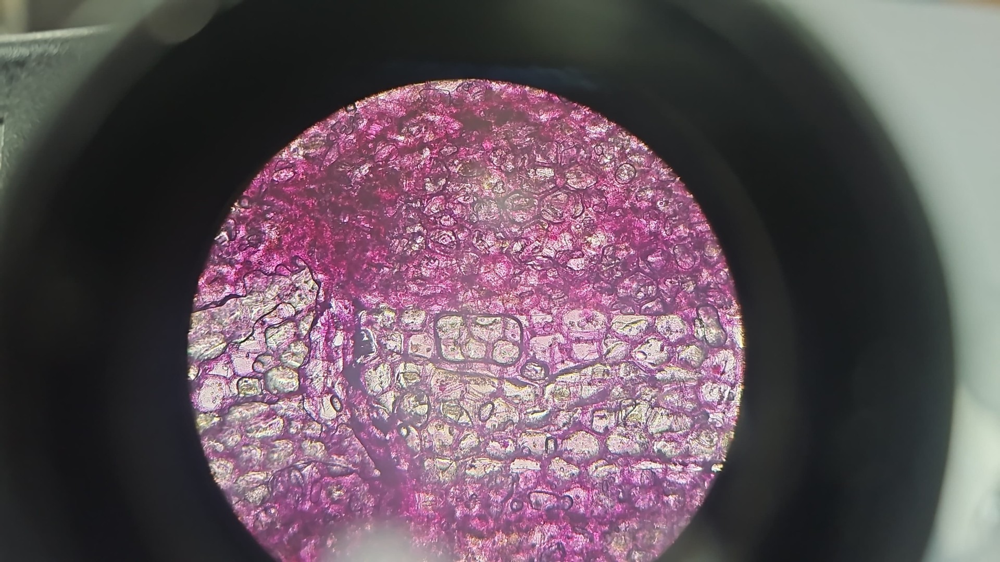

Mi Primer Mes en la Universidad
Durante mi primer mes en la universidad he aprendido principalmente cómo funciona la vida universitaria y cómo adaptarme a este nuevo entorno académico. Ha sido una experiencia desafiante pero gratificante.
Trabajos por Curso
A continuación presento un trabajo representativo de cada curso que llevé este primer mes:
🧬 Ciencias de la Vida
Informe 6 de Laboratorio
Estudio de seres vivos en el laboratorio.
📄 Ver Informe💬 Comunicación Efectiva
Actividad Propósitos Lingüísticos
Estudio de propósitos lingüísticos.
📄 Ver PDFFotos del Laboratorio






Habilidades Desarrolladas
- Elaboración de informes académicos.
- Uso de instrumentos en laboratorios.
- Interacción con otras personas y trabajo en equipo.
- Adaptación al ritmo universitario.
- Gestión del tiempo y creación de nuevas rutinas diarias.
- Buenas prácticas de comunicación.
- Desarrollo del pensamiento crítico y analítico.
- Elaboración de mapas de empatía (Design Thinking).